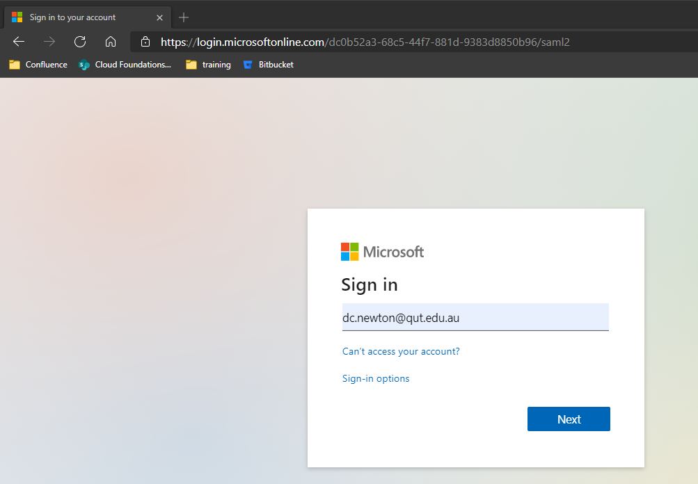
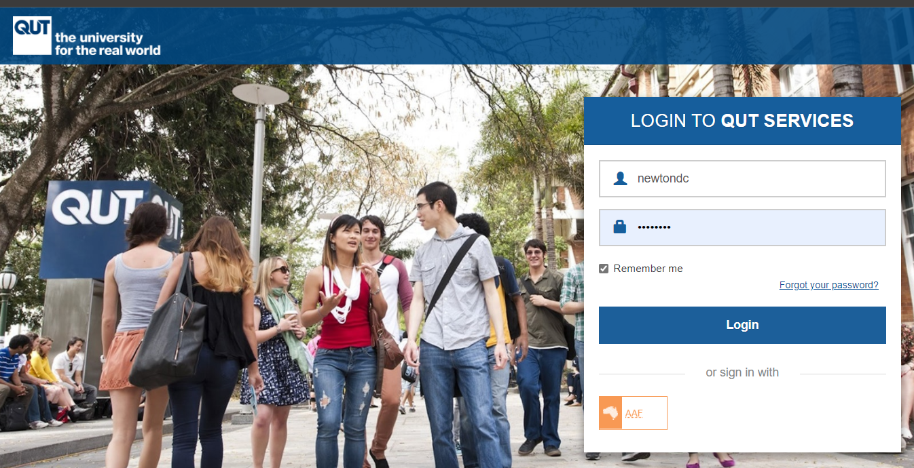
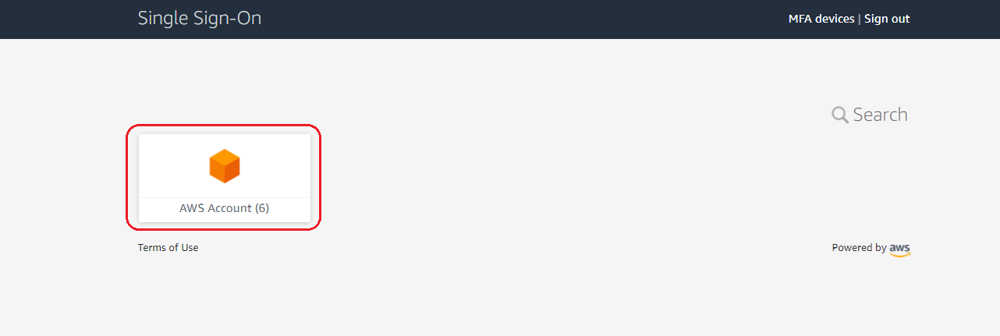
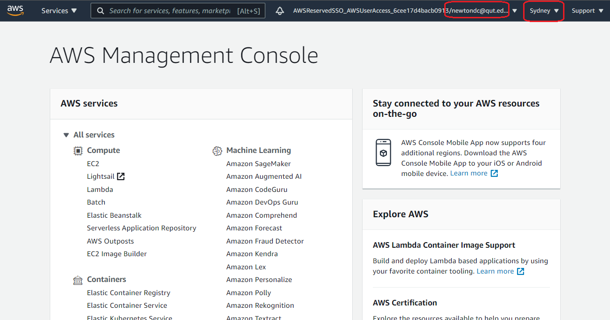

Section Overview
This guide will show you how to log onto the QUT managed AWS service.
References
How-To Guide
- Navigate to the AWS SSO via https://d-97671c4bd0.awsapps.com/start#/. QUT uses Single Sign-On technology (SSO) for our Cloud environments so depending on your browser session you will end up at step 2 or step 4.
- Please input your full email address if you have not signed into QUT from this browser session. You will be asked to enter your QUT Credentials. Don't get confused by the Microsoft splash screen! QUT uses Microsoft's Azure Active Directory for this stage of the authentication.

- Please Enter QUT Credentials and login.

- You will be redirected to the AWS SSO page. Click on the AWS Account drop down and select qut-aws-learn-teach-1. AWS Accounts are a logical container for AWS Resources - where we can create and manage AWS Resources. QUT has multiple AWS Accounts for different purposes. For this course we will be using the qut-aws-learn-teach-1 account.

- Select the account and you can login to the account with different access levels. For instance, a CAB432 student will select CAB432_STUDENT. You can now select either AWS Console or Command Line or programmatic access.

- If you select Management console you will be redirected to the AWS Console (This is the Portal/GUI method). You can now select the service you want to use. For instance, if you want to use the EC2 service, you can select EC2 from the Find Services search bar. Your user details and region appear in the top right hand corner. Ensure you are in the Sydney region, or your builds won't work.

- If you select Command Line or programmatic access you will be presented three options to access AWS environment programmatically. Note: Environment variables provide another way to specify configuration options and credentials, and can be useful for scripting or temporarily setting a named profile as the default. You now have three options for accessing the AWS environment programmatically:
- Option 1 - Set environment variables to contain the credentials;
- Option 2 - Create or edit your AWS credentials file (See more in the next section);
- Option 3 - Use the credentials directly (required by some services such as Bitbucket Pipelines, et al).